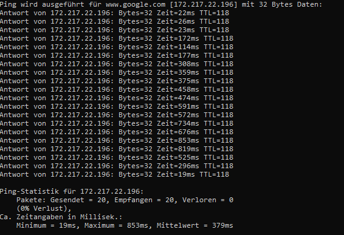

Hallo,
bin seit mittlerweile 3 Monate Kunde bei Magenta mit dem Gaming 50 Tarif. Hab anfänglich die Fiberbox 1 dazu bekommen weil die 2 nicht lagernd war.
Internet hat in der Zeit gut funktioniert.
Hab die Box dann mit der Fiberbox2 ausgetauscht und Online-Spielen ist seitdem unmöglich und man merkt das Stocken auch bei Videotelefonie.
Bei jeder Auslastung des Internets merkt man dass der Ping extrem hoch wird. Beim Screenshot unten wurde z.B. nebenbei ein Speedtest durchgeführt wobei der erste beim 4. Ping gestartet ist. (die gleichen Ergebnisse sieht man auch wenn man die Box direkt anpingt 192.168.0.1)
Ping im unbelasteten Zustand ist also ca. 25ms und im belasteten bis zu 1s. -> Bufferbloating??

Hab auch schon die Fiberbox2 gegen eine neue ausgetauscht und das Problem bleibt bestehen.
Das alles wurde auch mit einem Laptop getestet und auf die gleichen Ergebnisse gekommen.
Nach 3 langen Anrufen mit dem Support weiss ich nicht mehr was ich probieren sollte da keine ihrer Lösungen geholfen hat.
Zur Info: ich bin aktuell mit W-Lan verbunden, hab aber auch schon alles mit Kabel probiert und es treten die gleichen Probleme auf.
Hier noch einen Link zu einem Speedtest wo Bufferbloating mitgetestet wird:
http://www.dslreports.com/speedtest/66465177
Hat jemand ähnliche Probleme gehabt? Gibt es Lösungen dafür?
Vielen Dank im Voraus